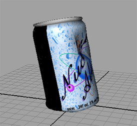
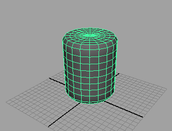
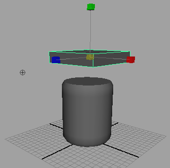
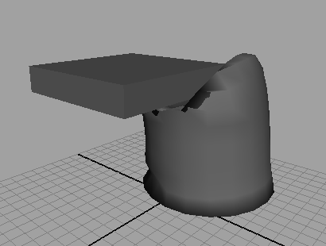

本示例将介绍如何使用 nCloth 模拟 Soda 压碎。
创建 nCloth can

这是 can 和刚性 nCloth 输入网格的基本模型。
若要生成 soda can 模型 nCloth
- 在 FX 菜单集中选择此 can，然后选择 “nCloth > 创建 nCloth”(nCloth > Create nCloth)。
- 在“属性编辑器”(Attribute Editor)中，选择“nucleus1”选项卡。
- 在“地平面”(Ground Plane)区域中启用“使用平面”(Use Plane)。
若要使 soda 被压碎
- 在属性编辑器中，选择“nClothShape1”选项卡。
- 在“动力学特性”(Dynamic Properties)中，按如下设置属性：
- “拉伸阻力”(Stretch Resistance)：133
- “压缩阻力”(Compression Resistance)：200
- “弯曲阻力”(Bend Resistance)：17
- “弯曲角度衰减”(Bend Angle Dropoff)：0.9
- “恢复角度”(Restitution Angle)：6
- “恢复张力”(Restitution Tension)：1000
- “变形阻力”(Deform Resistance)：1.3
- “阻尼”(Damp)：1
压碎 can
soda 现在可以配置为作出与 aluminum can 一样的反应。现在可以将其压碎。
若要压碎 soda
- 选择“创建 > 多边形基本体”(Create > Polygon Primitives) > “立方体”(Cube)。
多边形立方体将显示在原点。立方体在最初创建时，是被 can 遮挡住的。
- 从“工具箱”选择“移动工具”(Move Tool)并向上移动立方体，使其位于 can 的上方。
- 选择“缩放工具”(Scale Tool)并缩放立方体，以便其长度和宽度与 can 相同。

- 选择“nCloth > 创建被动碰撞对象”(nCloth > Create Passive Collider)。
- 从“工具箱”中选择“移动工具”(Move Tool)。
- 在 FX 菜单集中，选择“字段/解算器 > 交互式播放”(Fields/Solvers > Interactive Playback)。
- 作为场景播放，以不同的角度和速度将立方体向 can 移动。
当您将立方体向下移动时，can 将会变形。可以尝试将 can 从侧面或不同的角度撞击，以查看不同的变形。如果试验还没完成，而动画重置了，请增加播放结束的时间。
